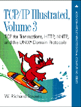

TCP/IP Illustrated, Volume 3: TCP for Transactions, HTTP, NNTP, and the UNIX Domain Protocols
, Addison-Wesley, 1996, ISBN 0-201-63495-3.
Table of Contents (
ASCII
) (
PostScript
).
Preface (
PostScript
) (
HTML
).
Current errata
.
Foreign language translations
.
Source code
for all examples in the book (48K tar file).
Order it now
(In
association
with Amazon.com Books).
Back to W. Richard Stevens' Home Page
 Back to W. Richard Stevens' Home Page
Back to W. Richard Stevens' Home Page